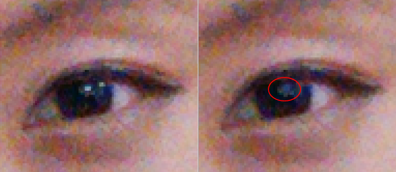

The following examples illustrate the effects of adjusting specific pizel correction parameter values for a snapshot project.
Effects of the Fmax Pixel Q 6 parameter
Figure : (L) Weak setting, Fmax Pixel Q 6=96, correct fewer bad
pixels. Circles around bad pixels not included in the detection. (R) Aggressive
setting, Fmax Pixel Q 6=65, correct more bad pixels

Effects of the Using Cross Channel parameter
Figure : (L) Using Cross Channel on, correct more bad pixels. (R)
Using Cross Channel off, image feature (circled in red) removed due to false
detection. Using cross channel can help in this case.
